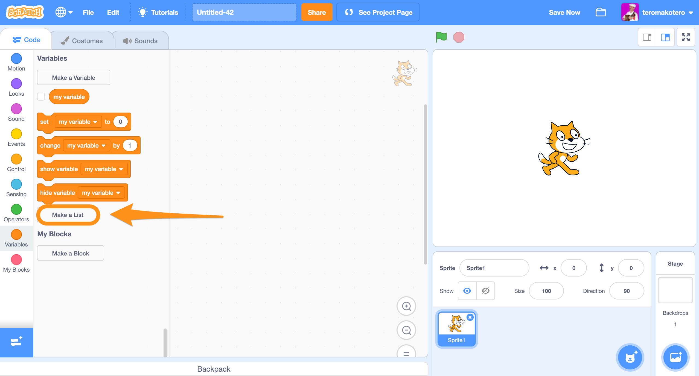
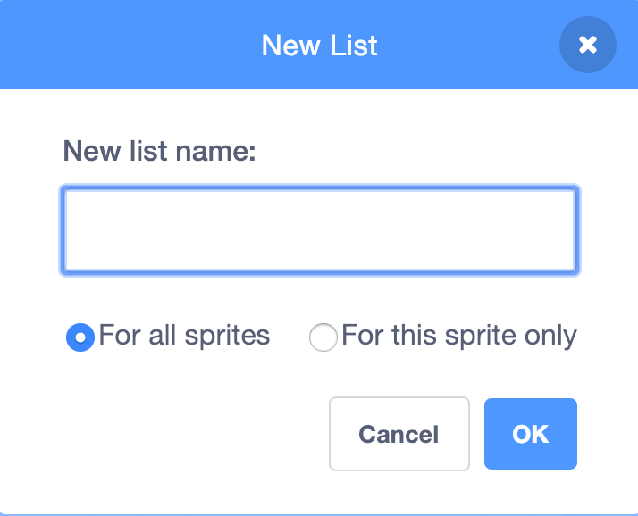
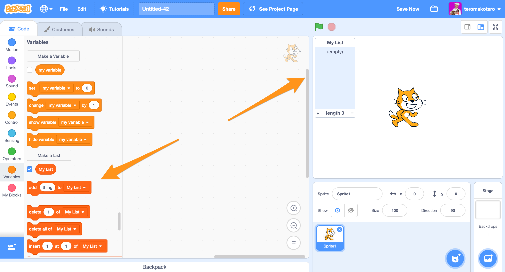
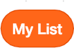
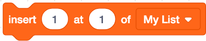

List
List is a tool that allows you to store large amounts of information at one and the same time. It can be defined as a variable with other variables in itself. The list consists of number-destination pairs. Each destination can be reached by a number. You can find Scratch's List Blocks in the Variables Blocks.
Examples of lists in Scratch
Go to the Variables menu and click on "Make a list".
Give the list a name and choose if it only applies to this Sprite or to all Sprites.
The List blocks are now displayed in the editor and an empty list on the scene.
This block indicates the items of the list.
This block adds the item at the end of the list.
This block removes all list items.
This block places the item in a particular location in the list.
In addition, there are many other useful blocks for managing the list's items.